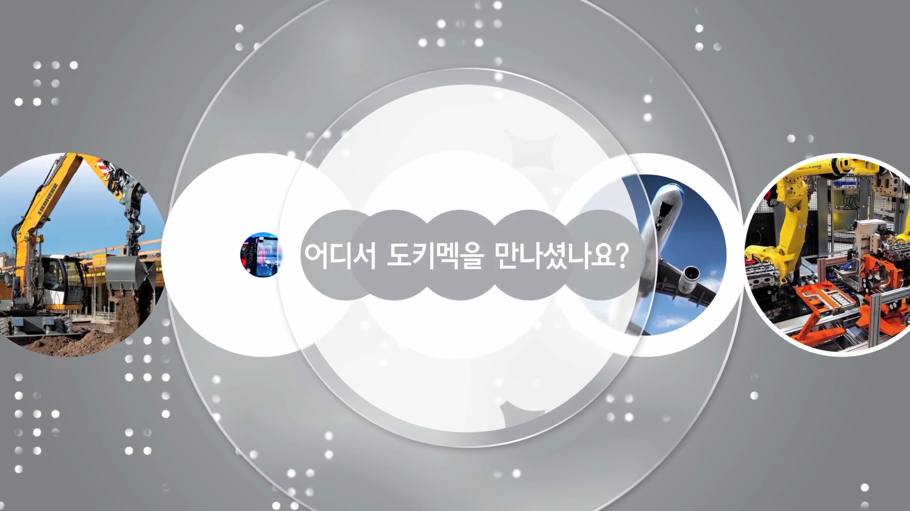
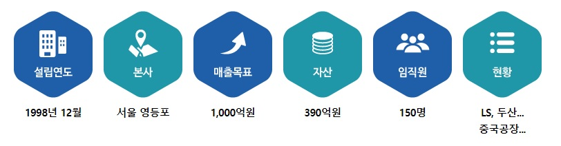
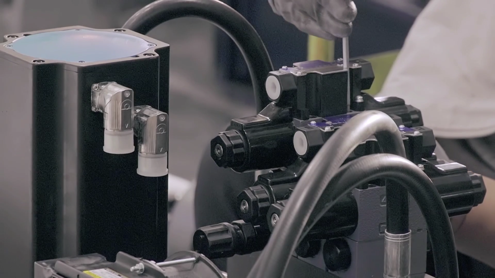
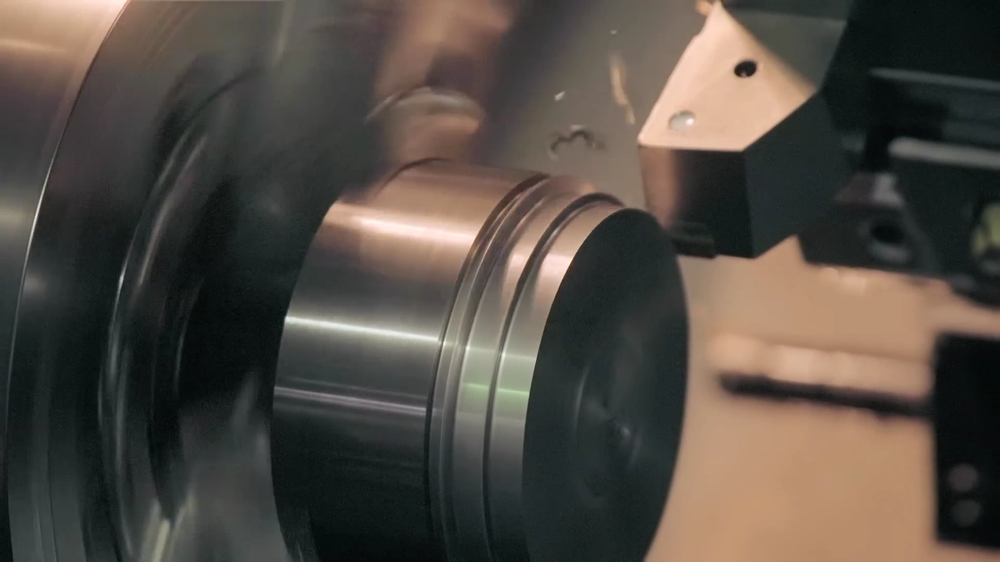
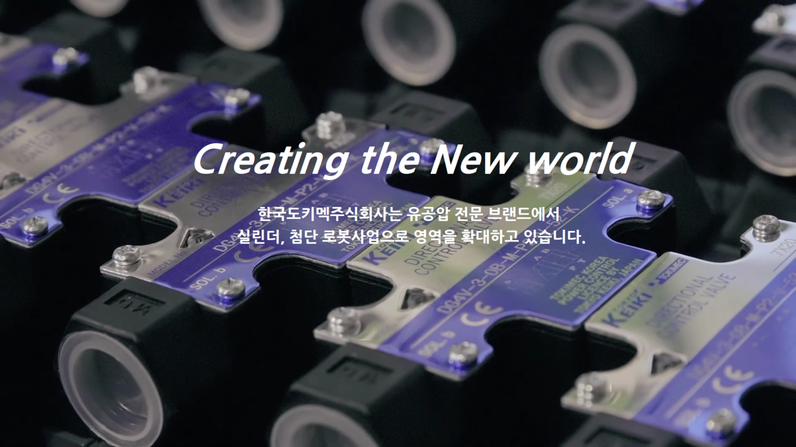

한국도키멕주식회사는 유공압 밸브 수입 유통업체로 시작해서 그동안 수입품의 국산화를 통해서 수입상품을 기술수입 및 이전하여 국산화를 빠르게 진행하고 있는 회사입니다. 그리고 수입에서 수출로 전환하여 해외 시장을 공략하고 있습니다.
유공압 관련 국내 시장 규모는 5,000억 정도의 시장으로 대부분을 해외 글로벌 기업들이 국내시장을 잠식하고 있으며 국내 국산품의 성장 가능성은 그만큼 무한하다고 할 수 있습니다.
다양한 고기능 밸브들도 기술지원 아래 하나씩 국산화 해 나가고 있으며, 여러 국책과제와 민관 합동개발을 통한 국산화에 더욱 박차를 가하고 있습니다.



인덱스팩, 로봇, 제어, 승강실린더, 제어밸브, 서보유니 실린더 등 신사업 ITEM의 추가로 매출 증대를 기대하고 있습니다.
향후 가까운 미래에 사업목표를 2,500억원의 매출을 기대할 수 있는 발전 가능성이 많은 신사업으로 영역을 확대하고 있습니다.
